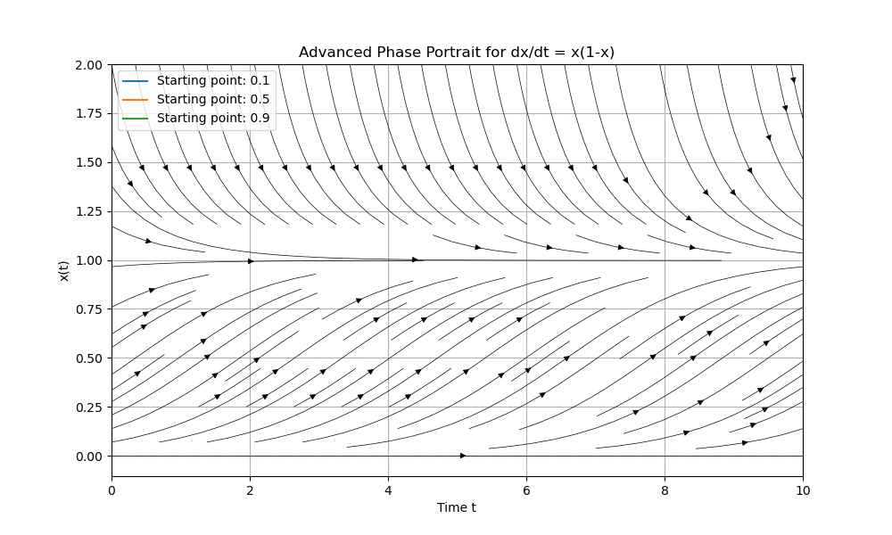

Runge-Kutta Solution Animation
Add your top notes here (click to edit).
Side notes — derivation outline or method order notes.

← Back to Introduction
Side notes — stability, step size, or error control pointers.
Bottom notes — add summary or references.